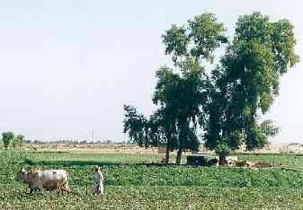

|
Renewable Resource Management
 Many models represent the interactions between a social group and a renewable resource. Resource can be water, wild faun, wood and tree, soil or pasture.
Water management[ABSTRACT] : Agent Based Simulation Tool for Resource Allocation in a CatchmenT in Brazil (Pieter van Oel). [AWARE] : Agent-based Watershed Analyses for Resource and Economic Sustainability in South Africa (Stefano Farolfi). [CatchScape] : River bassins management in north Thaïland (Nicolas Becu, Pascal Perez, Andrew Walker) [Orizi] : Small irrigation systems under free management (Pascal Perez and Nicolas Becu). [Sinuse] : distributed interactions between an underwater table and its users (Sarah Feuillette). [Shadoc] : organization and coordination within irrigation systems in Senegal (Olivier Barreteau). Wild faun management[Djemiong] : hunting of wild meat in Cameroun (Christophe Le Page, François Bousquet and Innocent Bakam). Tree and wood management[Kayanza] : firewood in Burundi (Philippe Guizol, Cleto Ndikumadengue, François Bousquet and Martine Antona). [Mobe] : regulation of firewood marketing systems in Niger (Martine Antona). [Sabah] : plantation development among small farmers in Malaysia (Philippe Guizol). [TransAmazon] : Modelling the dynamics of the Pioneers Fronts of the Transamazon Highway Region (Thierry Bonaudo, Jean-Françis Tourrand et Pierre Bommel). Erosion and soil management[Burkina] : soil quality indicators in Burkina Faso (Serge Guillobez). [WsErosion] : soil erosion risk and agricultural diversification in a Northern-Thailand watershed (Guy Trébuil and Christian Baron). Pasture management[Pasteur] : sparse resource sharing by herds in sahelian area (Alassane Bah and Patrick dAquino). [TransAmazon] : Modelling the dynamics of the Pioneers Fronts of the Transamazon Highway Region (Thierry Bonaudo, Jean-Françis Tourrand et Pierre Bommel). |